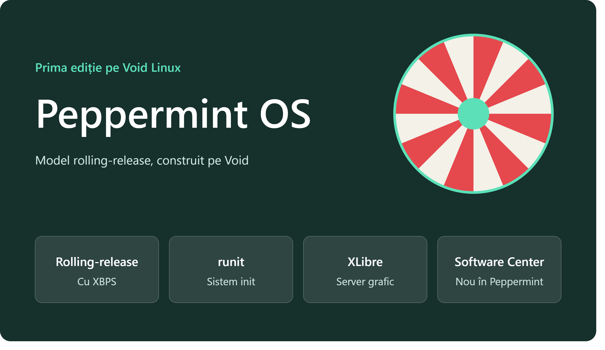

Peppermint OS lansează prima sa ediție bazată pe Void Linux: Model rolling-release cu XBPS, runit, server grafic XLibre și noul Peppermint Software Center

La puțin peste o lună de la anunțarea proiectului experimental PepVoid, echipa Peppermint OS a lansat oficial prima sa ediție bazată pe Void Linux. Noua distribuție oferă o alternativă rolling-release ușoară și accesibilă, fără a înlocui sau abandona edițiile existente bazate pe Debian și Devuan.
1. Schimbarea fundației tehnice: Void Linux, XBPS, runit și XLibre
Model rolling-release și gestionarea serviciilor: Spre deosebire de baza tradițională Debian, noua ediție adoptă modelul rolling-release al Void Linux, utilizează managerul nativ de pachete XBPS și înlocuiește
systemdcu sistemul de inițializarerunit.Kernel și server grafic: Distribuția este propulsată de nucleul Linux 6.18 LTS, păstrează mediul desktop clasic Xfce și utilizează XLibre (fork-ul X.Org) ca server de afișare implicit — la fel ca edițiile Peppermint bazate pe Debian și Devuan.
Instrument propriu de construire a imaginilor ISO: Dezvoltatorii au creat de la zero propriul utilitar de generare a imaginilor ISO (cu documentație disponibilă public pentru comunitate), după ce au constatat că uneltele standard
void-mklivenu acopereau cerințele specifice ale proiectului.
2. Ediția Loaded, aplicații preinstalate și unelte Peppermint actualizate
Pachet complet gata de utilizare (~4 GB): Această primă lansare este publicată sub forma ediției Loaded (imagine ISO de aproximativ 4 GB), destinată utilizatorilor care doresc un sistem complet echipat imediat după instalare. Cei care preferă o instalare minimală vor trebui să aștepte viitoarea ediție Flagship.
Software preinstalat: Include din start Firefox, Thunderbird, FileZilla, HexChat, Transmission, VLC, Audacious, suita completă LibreOffice și editorul/IDE-ul ușor Geany.
Peppermint Software Center și PepTools: Introduce noul Peppermint Software Center, interfețe grafice actualizate pentru suita de administrare a sistemului (PepTools) și o versiune îmbunătățită a utilitarului de informații de sistem PepFetch.